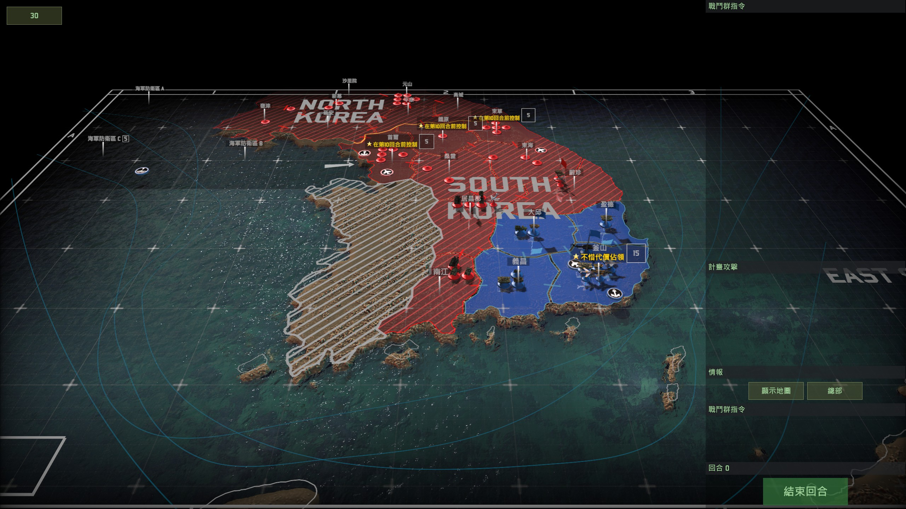
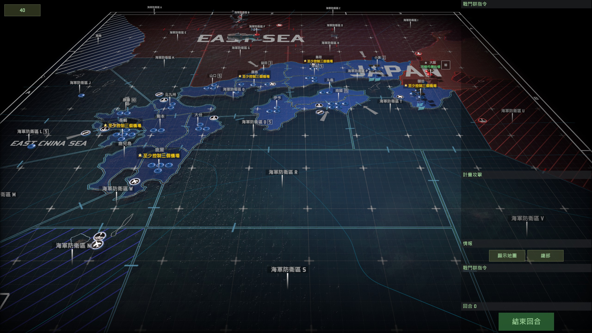
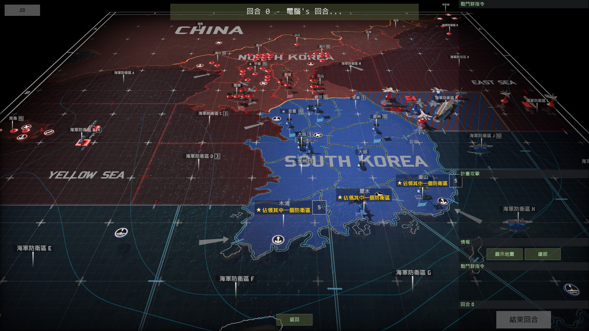

A description for the stories told by “Wargame: Red Dragon”, an RTS game.
事先声明：本人坚持中国共产党的领导，唯物史观，拒绝历史虚无主义。以下内容均为游戏虚构内容，请勿与现实世界挂钩。
《Wargame: Red Dragon》
《战争游戏：红龙》(Wargame: Red Dragon)是由Eugen Systems开发，Focus Home Interactive发行的一款即时战略游戏，于2014年4月18日发行
Steam直达>>Wargame: Red Dragon
写这篇记录是因为小学初中那段时间在优酷上看到了这款游戏，当时便对这款游戏的战役（架空）剧情很感兴趣，一直到现在也偶尔会玩玩这款游戏或者是找点视频回味。不过值得一提的是，正如其名字所言，本作游戏着重描绘了东亚尤其是某东方大国（以下简称东大）的剧情与场景，所以目前部分涉及到东大的剧情无法过多展示。
在本作中，剧情和整个游戏的背景都设定在上世纪70-90年代冷战时期，大国之间的博弈和争端或是关键国家内部的政治动荡极有可能演绎为局部战争乃至世界大战（参考古巴导弹危机）。Wargame系列的剧情建立在这些博弈和争端进一步恶化的基础上，且多为“一触即发”类，在下面的具体情节中可以体会得到。
注：游戏支持繁体中文而并不支持简体中文，传述官方繁体中文剧情时不作任何更改，所以可能会有语法或是文字上的小问题（例如将“朝鲜”写作“北韩”）。
另注：由于剧情是洋人写的，所以立场和用词上面自然会和我们有所不同（尤其是涉及东大的一些地方），权当乐子看待，请勿当真。（有时候当反派的感觉也很爽）
1987 釜山口袋（BUSAN POCKET）
涉及国家：美国、韩国、朝鲜
主视角：韩国
剧情历史原型：1987年韩国6·10民主抗争
官方剧情概览：
南韩军权受到全国性示威撼动之际，重新部署武力镇压街上的示威行动。北韩视此为等待已久的《统一战役》良机。
官方剧情总述：
1987年6月10日，南韩独裁者全斗焕的法定总统任期结束并计划下台时，宣布所选定的继承者。这一略过选举程序而径行指派继承者的行为，引起期待自由改革的学生与自由主义者愤怒
1987年6月10日—18日，短短数日内，全国上百万名抗议者上街游行，在韩国的美军受命停留在营区内。
北韩并未停止对韩国情势的注意，为提高混乱程度，间谍渗透至指派的党派，使得军队进入警戒状态…
1987年6月19日，警察与安全部队即将被压制之际，全斗焕总统动员军队上街。一名受到充满敌意群众压迫与恐吓的军官下令部队开火，短短数分钟内，首尔街道充斥着枪响声…
1987年6月19日—21日，残酷的镇压行动造成上千人死亡，并有更多的人遭到逮捕。
1987年6月21日，当美军部队仍停留在营区、韩国军队部署在街道上之际，北韩领导者金日成确定韩国再度统一的时间已经到来…
1987年6月22日，黎明时分，当北韩军队炮火封锁非军事区域时，受不安民众扰乱的美国与韩国军队遭到出其不意的攻击。
1987年6月22日—27日，数个小时内，第一道防线遭到压制；数天内，无力还击的美国与韩国军队被迫退到釜山这个极为重要的港口。
至此战役开始。在战役开始，韩国除了釜山及其周边一带已经全部被朝鲜占领（复刻第一次朝鲜战争），玩家作为韩国少校（游戏对话是这么称呼的）则负责坚守釜山港及其周边地带。在第二回合后，美军舰队将抵达周边海域登陆首尔，与韩国军队实施反攻。

1984 攀登纳罗达峰（CLIMB MOUNT NARODNAIA）
涉及国家：美国、苏联、韩国、日本
主视角：苏联
剧情历史原型：南千岛群岛问题
What is this thing? : 纳罗达峰
官方剧情概览：
千岛群岛历经四十年的紧张状态后，苏联与日本间的外交关系陷入空前的低迷，因此，当美日联合舰队过度靠近海参崴苏联海军基地时，这个无害的海军演习触发了出乎意料的激烈反应…
官方剧情总述：
1945年—1975年，日俄关系因苏联占领千岛群岛而生变；因此两国自二次世界大战后期，即无法承认和平条约。
1979—1980，苏联提升千岛地区的部队与海军装备，日本则对苏联采取强化立场，并增加军事支出作为报复。
1982年，日本同意在境内部署美国先进F16轰炸机，苏联则由欧洲运来SS-20中程弹道飞弹回敬。
1983年，日本首相宣布将日本打造为《不沉的航空母舰》意图。苏联对此立即作出回应：《身处在现代化科技的年代，不沉的航空母舰并不存在》。
1984年11月，美日联合海军演习，日本海上的FleetEx 85距离海参崴仅500里，苏联舰队进入高度警戒。
1984年12月4日，舰艇演习结束，但苏联海军情报政治局确信那只是一场真实、迫在眉睫且猛烈攻击行动的预告，因此准许对日本及其美国海军基地发动先发制人的攻击。
1984年12月6日，《攀登纳罗达峰》的编码讯息传送到苏联军队时，数支空降与海军步兵师已准备好攻击日本。黎明破晓时分，第一批苏联伞兵登陆日本，且同时由千岛群岛发动机械化挺进攻击。
至此战役开始。战役开始时，苏联已经打下了半个日本（实属武德充沛），玩家则被要求在16天内控制至少三个敌军机场并守住大阪。由于这场行动是海陆空联合行动，苏军的海军陆战队可以由北到西从四个敌军区域登陆，同时会有库兹涅佐夫号航空母舰从海域支援，整体而言声势十分浩大。

1992 第二次朝鲜战争（2ND KOREAN WAR）
事先声明：由于该战役是欧根相较于前4次战役（”熊 vs. 龙“ 和 “东方之珠”由于和“东大”关系很大，所以放在了本文最后记录 ）单独出的资料片，所以原版的官方剧情动画字幕既有缺失，又有繁体中文，甚至还有英文，所以转述采取以下原则：
繁体中文原文一概不作改变（除了将“戈巴契夫”改成“戈尔巴乔夫”，因为实在太难受了），英文和缺失部分将由个人翻译，且翻译部分会单独标出（这就意味着未单独标注的文字均为繁体中文原文）。
涉及国家：美国、德国、法国、澳大利亚、加拿大、日本、韩国、朝鲜、苏联、”东大“
主视角：北约
官方剧情概览：
1991年，莫斯科的政变成功取代了苏联的政党强硬派。随着华沙公约组织的瓦解，他们寻求机会强化苏联与亚洲最后共产邻国间的关系，争取此伙伴的代价则是韩国在单一统治者的情况下再度统一…
官方剧情总述：
1989年11月9日，铁幕瓦解，德国的苏联军队遵从戈尔巴乔夫的直接命令驻扎在兵营。
1991年，当华沙公约组织解散，有势力的政党、军队与KGB成员为了迫在眉睫的苏联崩解而担忧，因此决定推翻戈尔巴乔夫。
（翻译）1991年8月18日—19日，叛乱领导人启动了“紧急状态”计划，逮捕了戈尔巴乔夫，叶利钦和数个自由派议员.
1991年8月21日，由叛乱领导者组成的紧急状态国家委员会为了管理国家而成立。
1991年八月末，尽管前华沙公约组织成员无法完成脱离组织，位于波罗的海诸国的战略海军基地快速且残暴地被重新占领。
1991年秋，苏联独自面对欧洲的北大西洋公约组织，向仅存的共产同胞：中国与北韩提出了外交交换。为了巩固与亚洲盟友间的新友好关系，苏联同意秘密运送最先进的武器。
1992年四月，亚洲的军事建立并未逃过联合国部队的注意，非军事区域的单位进入高度警戒状态，企业号航空母舰则被派往日本海巡逻。
1992年4月15日，来源未知的爆炸击中企业号航空母舰船尾，使其动弹不得，当时一支苏联中队正朝它前进…
至此战役开始。由于整场战役的开始是由美国企业号航母被苏联潜艇突然袭击导致，所以玩家在战役一开始就被强制参与一场海战（图中斜杠标记部分：海军防御区K），并被要求击退华约舰队的同时保证企业号航空母舰的安全（游戏机制强制企业号无法从战斗中撤离）。整场战役要求玩家守住图中的三个区域，甚至在开局时会建议玩家率先进攻来为后方防御争取时间。
